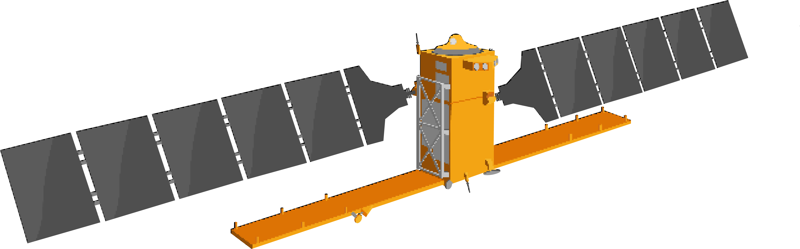

Multiple Spectral Indices
VV/VH Ratio, RVI (Radar Vegetation Index), and DpRVI (Dual-pol SAR Vegetation Index) — choose the index that best fits your analysis.

AGLgisSelect your AOI, choose spectral indices and render modes, visualize time series, and export results — all without leaving QGIS.
A complete workflow for SAR data processing in QGIS with Google Earth Engine integration.
VV/VH Ratio, RVI (Radar Vegetation Index), and DpRVI (Dual-pol SAR Vegetation Index) — choose the index that best fits your analysis.
RGB composites with cumulative cut contrast enhancement, or single-band pseudocolor with Viridis palette for intuitive visualization.
Plotly charts with zoom, pan, and hover — filter by date and export results as CSV for external analysis.
Download multiple images with progress tracking and cancellation support. All images load automatically to your QGIS project.
Border noise correction, terrain flattening, and speckle filtering with full control over SAR parameters.
Authenticate with Google Cloud, access Sentinel-1 ARD collection directly, and process data without external tools.
A three-step workflow to go from authentication to loaded SAR imagery in QGIS.
Set up your Google Cloud project ID and authenticate with Google Earth Engine through the plugin.
Select your AOI, date range, spectral index, and processing parameters. Click "Run" to generate the time series.
View interactive charts, filter dates, preview or download SAR images, and export results as CSV or GeoTIFF.
Set up Google Earth Engine and configure AGLgis to start processing Sentinel-1 data.
Sign up for free at earthengine.google.com. GEE is free for non-commercial research, education, and nonprofit use.
→ Go to Earth EngineCreate a new project and link it to your GEE account.
→ Google Cloud ConsoleIn Cloud Console, search for "Earth Engine API" and enable it. This allows the plugin to communicate with GEE.
→ Enable APIDeclare your use case (research, education, commercial, etc.) in the GEE configuration page.
→ GEE ConfigurationOpen AGLgis in QGIS, click "Authenticate", and enter your Cloud project ID. The plugin will guide you through OAuth.
Technology and field intelligence working together to support practical operations.
Speak with FARM about exclusive custom solutionsAGLgis builds on the Sentinel-1 SAR Backscatter Analysis Ready Data Preparation in Google Earth Engine framework by Mullissa et al.